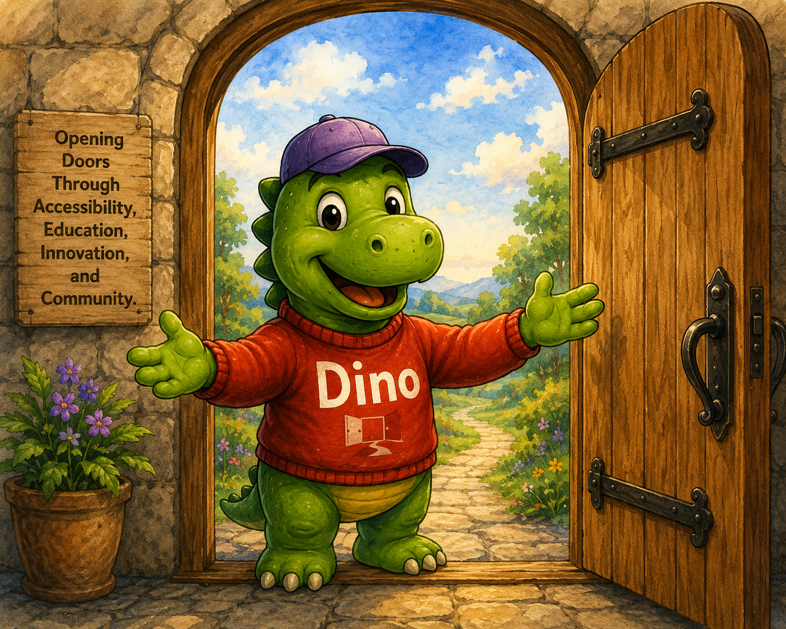

This version tests three separate carousel regions, queued named live announcements, focusable slide summaries, persistent motion preference, and a Dino philosophy carousel that connects the interaction pattern to real Open Door Design values.
Before the first carousel
This text is intentionally placed before the first carousel. When keyboard focus moves into the first carousel, that carousel should pause. When focus leaves it, motion should resume unless motion has been manually paused.
Multimedia carousel
This first carousel contains images, videos, buttons, links, and a form. It should pause while the user is inside this carousel region and resume after the user leaves this region, unless Pause motion has been activated. This version does not use viewport or reading-area detection.
Automatic slide rotation is active.
Slide 1 of 5
Welcome to the Open Door Accessibility Lab
This slide introduces the multimedia carousel test. Use Previous and Next to move between slides.

Slide 2 of 5
Technology Connects Us
This short clip works well for a slide about mobile access, digital communication, and inclusive design.
Video description: A close-up view shows a person holding a smartphone and typing with both thumbs.
Slide 3 of 5
Innovation Supports Independence
This clip shows how technology and independent work can belong in the same story.
Video description: A person with a prosthetic leg sits on a park bench using a laptop, with trees and flowers in the background.
Slide 4 of 5
Stay Connected
This slide demonstrates form controls inside the carousel. Motion remains paused while the user works in the form.
Slide 5 of 5
Accessibility Resources
This slide demonstrates multiple links inside a carousel slide.
This section exists so you can test leaving the first carousel region. When the virtual cursor or keyboard focus reaches this heading or paragraph, the first carousel should no longer be treated as the active carousel region.
Continue to the next heading to enter a second carousel region. Each carousel manages its own automatic motion independently unless the site-wide Pause motion preference is enabled.
Initiatives carousel
This second carousel is a simple homepage-style initiatives carousel. It uses the same motion rules as the first carousel, but with lighter content.
Automatic slide rotation is active.
Slide 1 of 4
SR Document Remediation Tool
A project exploring screen-reader-first workflows for PDF and document remediation.
This section separates the second and third carousel regions. The third carousel introduces Dino as a guide to Open Door Design values while also demonstrating that three independent carousels can operate on the same page.
Dino philosophy carousel
This third carousel introduces Dino through Open Door Design values. It is also a demonstration of how multiple independent carousels can pause and resume without interfering with each other.
Automatic slide rotation is active.
Slide 1 of 7
Accessibility Starts with a Welcome
Accessibility begins when people are invited in rather than left out.
Dino the Welcomer: Open, friendly, and ready to invite people in.
Image description: Dino stands in an open doorway holding a book titled Accessibility Opens Doors while welcoming visitors inside.
🚪
Dino the Welcomer
Open, friendly, and ready to invite people in.
Slide 2 of 7
Testing with Real Users Matters
Accessibility should be verified using real assistive technology and real user workflows.
Dino the Tester: Practical, careful, and grounded in real experience.
Image description: Dino sits at a desk using a laptop with an Open Door Design mug nearby.
💻
Dino the Tester
Practical, careful, and grounded in real experience.
Slide 3 of 7
Education Creates Independence
Learning accessibility creates confidence, opportunity, and independence.
Dino the Teacher: Clear, patient, and focused on useful learning.
Image description: Dino stands beside a presentation board describing how accessibility benefits everyone.
📚
Dino the Teacher
Clear, patient, and focused on useful learning.
Slide 4 of 7
Accessibility Benefits Everyone
Inclusive design improves experiences for people with diverse abilities and backgrounds.
Dino the Collaborator: Community-minded and centered on inclusion.
Image description: Dino stands with a diverse group of people holding a sign that reads Together We Build Inclusion.
🤝
Dino the Collaborator
Community-minded and centered on inclusion.
Slide 5 of 7
Solve Problems, Not Checkboxes
The goal is creating usable experiences rather than simply satisfying compliance requirements.
Dino the Problem Solver: Thoughtful, practical, and focused on real barriers.
Image description: Dino studies puzzle pieces labeled Accessible Design, Usability, and Inclusion while considering how they fit together.
🧩
Dino the Problem Solver
Thoughtful, practical, and focused on real barriers.
Slide 6 of 7
Build on Strong Foundations
Standards, testing, and best practices provide a foundation for accessibility work.
Dino the Resource Guide: Rooted in standards and practical knowledge.
Image description: Dino carries a stack of books labeled Guidelines, WCAG, Testing, and Best Practices.
📖
Dino the Resource Guide
Rooted in standards and practical knowledge.
Slide 7 of 7
Keep the Door Open
Accessibility is not a destination. It is an ongoing commitment to inclusion.
Dino the Encourager: Optimistic, inviting, and always pointing toward the next door.
Image description: Dino gives a thumbs up while holding a sign that reads Every Click Should Open A Door.
👍
Dino the Encourager
Optimistic, inviting, and always pointing toward the next door.
Slide 1 of 7
After the third carousel
This section exists to test leaving the third carousel region. Once the user reaches this section, no carousel should be treated as the active carousel region.
What this reference implementation demonstrates
This page demonstrates a Screen Reader First carousel pattern using multiple independent carousel regions, focusable slide summaries, predictable media controls, accessible form validation, named live-region announcements, and a persistent Pause motion preference.
Keyboard focus entering a carousel pauses that carousel.
Keyboard focus leaving a carousel allows that carousel to resume unless motion has been manually paused.
Each carousel manages its own motion independently.
The Pause motion control is a site-wide preference and is remembered across visits.
Slide summaries provide context before controls for Virtual Cursor Off users.